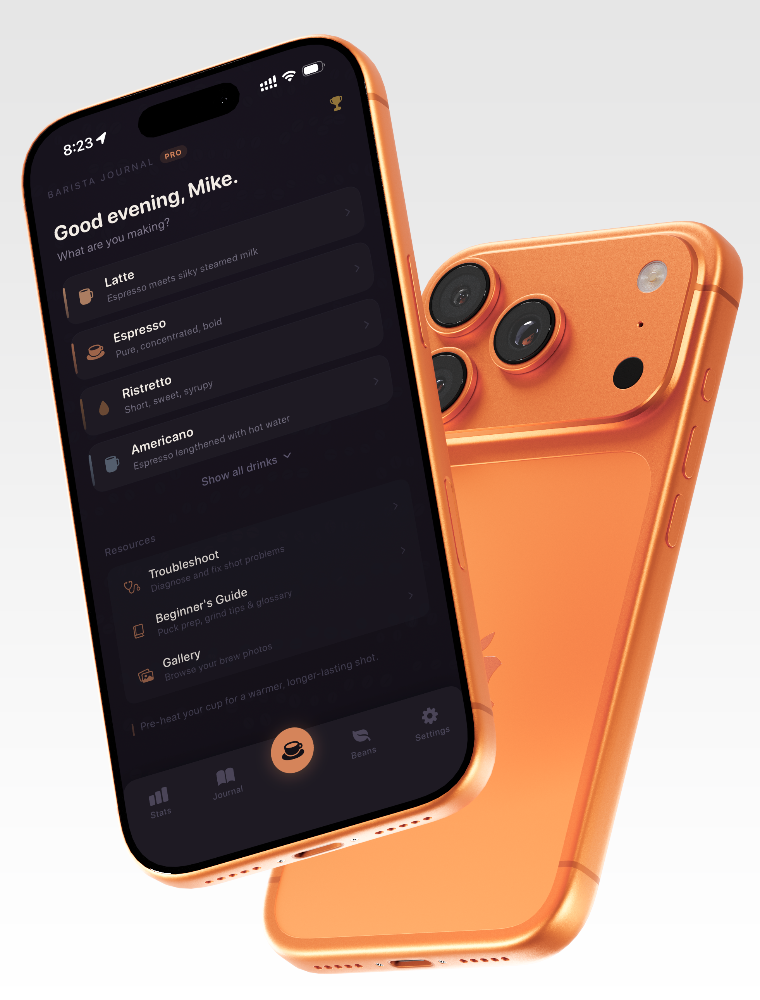
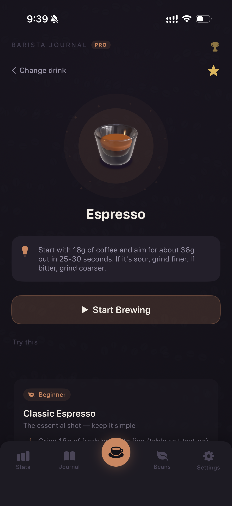

Track
Every shot becomes usable data
Log dose, yield, grind, extraction, milk prep, and notes in one smooth brew flow.
iOS app for home espresso enthusiasts
Track dose, yield, time, milk, and notes. Learn from trends, fix mistakes faster, and build your best coffee routine with Barista Journal.

Track
Log dose, yield, grind, extraction, milk prep, and notes in one smooth brew flow.
Learn
Common mistakes, latte art basics, crema and grind guides, and practical fixes while you brew.
Improve
Review consistency, costs, and bean performance over time so each week tastes better.
Why Barista Journal
Barista Journal started as a personal tool to stop forgetting what actually worked. After hundreds of home shots, it became a focused system for getting more consistent, more confident, and more intentional behind the machine.

What's Different
Brew Loop
Barista Journal is built as a cycle: log details, diagnose what happened, save what worked, and improve every new bag.
Dose, yield, extraction, milk, syrups, and crema captured in one pass.
Use taste and extraction clues to quickly tune grind, yield, and timing.
Turn great shots into reusable presets for flat whites, cortados, and more.
Without Barista Journal
With Barista Journal
Issue 01
Barista Journal treats brewing like craft, not chaos. It captures your ritual, preserves your best formulas, and turns every cup into a deliberate result.
Gallery Every shot is archived as part of a living coffee journal, searchable by drink, bean, and quality.
Presets Signature recipes stay ready: milk, syrup, extraction, and machine choices locked for repeatable pours.
Diagnosis Flavor notes become direction. Less guessing, fewer wasted beans, faster improvement.
Shop A curated list of beans and tools worth buying, selected for real home barista workflows.
Not a generic coffee tracker. A focused brewing publication, written by your own data.
Built Around Your Workflow
You log a shot, diagnose what happened, save the version that worked, and revisit it later with context that actually matters.
Gallery memory: every shot stays searchable by bean, recipe, and rating.
Recipe presets: one tap to load your exact flat white or cortado setup.
Diagnosis loop: tasting notes become direct grind, yield, and timing adjustments.
Curated shop: your handpicked affiliate links for beans and tools you trust.
Capture.
Interpret.
Refine.
Repeat.
App preview
A first look at the logging flow, insights, and espresso tools in Barista Journal.
Waitlist
Join early access for launch updates, onboarding invites, and occasional brewing tips.